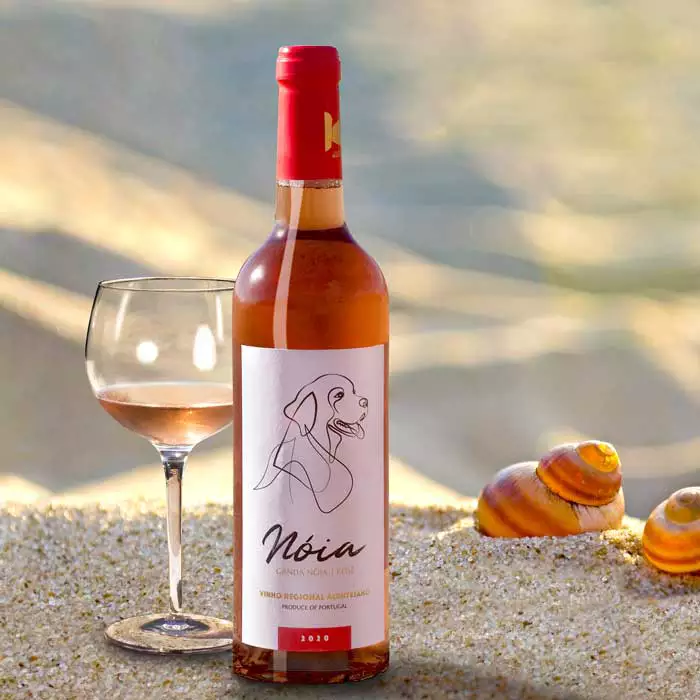

Vinharia Agnelo
Seja bem-vindo!
Vinhos do dia

Vinho Noia Rosé 2020
R$ 119,00
Este vinho foi inspirado e sonhado a partir das castas Syrah e Touriga Nacional. A inspiração surge na magnifica paisagem das próprias vinhas, onde as videiras crescem e permitem produzir uvas de grande qualidade e com extraordinário potencial.
Vinho Tinto Alma Negra 750 mL
R$ 208,91
O consagrado Alma Negra é um delicioso "corte secreto" de Tikal, que não revela quais uvas ou qual a proporção que entra neste intrigante blend. O bouquet é exuberante e exótico. Um dos maiores sucessos entre os vinhos argentinos.
Graham's Fine Ruby
R$ 154,29
Graham's é a mais prestigiosa casa de vinhos do Porto. Este Fine Ruby é um ótimo exemplar deste tipo de Porto, um blend de vários vinhos jovens, envelhecido em madeira por 3 anos. É bem frutado e doce, muito agradável.